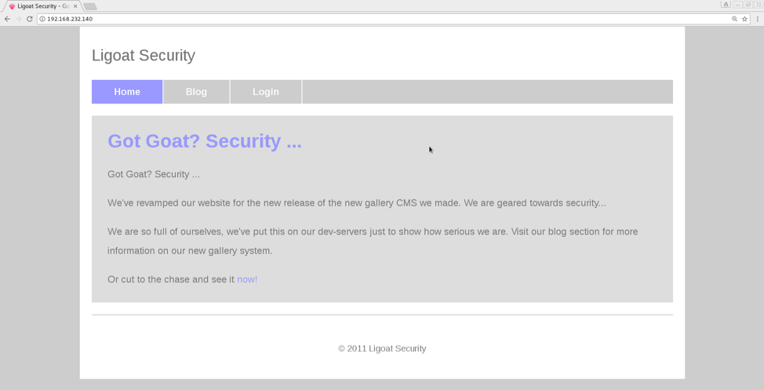

Phase 1 Recon: Collecting information about the target
Get our IP by using ifconfig, and then use nmap to scan the range of possible IP's.
We can see now that the target IP is 192.168.232.140.
Phase 2 Scanning: Discover OS, open ports, and running services
Now we can use nmap to perform a more in-depth scan on our targets open ports.
Here we see the open ports, the services that they are running, and the operating system. We know the:
- Open Ports
- Port 22: Secure Shell for remote access to the terminal
- Port 80: Standard port used for web servers, this one is running an Apache v.2.2.8.
- Operating System
- o We see that the machine is running a version of Linux 2.6.x. By looking at both of the open ports we can make an educated guess that this machine is running a flavor of Linux called Ubuntu. We could be wrong but this might be useful, and we can confirm later on.
Phase 3 Enumeration: A more active way of gathering information
We will now be connecting to potentially vulnerable ports to gather more information about our target machine.
- Port 80: HTTP/WEB
Let's start with visting the webpage.
Clicking through tabs, most of the links didn’t serve any useful pages, they brought you to advertisement pages. The login page proved more useful.
SQLInjection into the form doesn’t work, so lets shift focus onto the banner at the bottom of the form, LotusCMS. What is LotusCMS? Google tells us that it is a open source content manager. It looks like it hasn’t been updated in some time, and that it’s a fairly unused system, perfect for exploitation. Searchsploit returns an overwhelming amount of results for lotuscms so lets try Google. Searching Google the first result that comes up is:
The video is very informative about how Hood3dRob1n wrote the script and includes an example of how to use it. We are looking for remote command execution, so this looks like it could be great. Following the instructions in the video let’s download the exploit and run.
Phase 4: Gaining Access: Getting usernames, passwords, and other credentials to gain ownership of anything
Navigating through the shell certain commands aren’t working (marked by red x’s), and we cant see our path on the left side of the screen like normal. These are indications that this is a what some call a "dumb" shell, meaning it isn’t fully interactive. We can upgrade our shell into a pseudo-terminal, shell that acts like the terminal, using a script for python (1) python -c ‘import pty; pty.spawn(“bin/bash”)’. This python script imports the pty module, used for pseudo-terminals, and its spawn function to create a bin/bash “terminal” and connect it back to the controlling shell. Clear still isn’t working but judging from the error this is fixable by setting the TERM variable to xterm using export TERM=xterm.
Now that we have a mostly complete terminal we can more easily navigate through the system. Backing out of the file system, two steps deep, there is some interesting information.
In loneferret’s folder there is a readme file that mentions a text editor called ht that is run with root priviledges, and refers to them as a employee. This could be important for later. After some searching cd back to /home/www/kioptrix3.com and lets try using grep “password” ./*/* and see what we find.
Let’s change directories, cd, to the gallery file and cat gconfig.php.
In the file there is login information with a username and a password, now we can login to the mysql database using mysql -u root -p.
From here we can try to find any username and password combinations stored in the database. Since we are in a MySQL database we will use SQL to navigate through the database.
Using show databases; we see all of the different databases being managed. Schemas are a type of blueprint for objects in a particular database usually define attributes, and value types. Let’s skip that for now and go into the gallery database. We can do this by typing use gallery; Now we can use show tables; to see the different tables that are being stored in the database.
Gallarific_users and dev_accounts look like the most promising place to start. We can use select * from gallarific_users; to view the information in the gallarific_users table, the * meaning all.
While gallarific_users didn’t have much useful information, dev_accounts did have a couple users and what appears to be their hashed passwords. We could use a Kali tool to decrypt the password, but lets save some time and see if popular online tool called CrackStation.com will work for us. Let’s try loneferret’s password on the hunch the dregs will not be useful. This is because earlier loneferret was refereed to as an employee and was a non-empty folder. Dregs folder did not contain anything useful.
Awesome, now that we have the password, starwars, lets see if it will let us ssh into loneferret’s account. Use ssh loneferret@192.168.232.140 to remotely access the account and typing in the password when prompted.
Awesome now that we are in lets figure out how to get root. Since we are in loneferrets home the CompanyPolicy.README is the first thing that we see. This ht program sounds important so let’s locate it first.
Running it as root we see that you can access any file on the system and write to it. One way to establish persistence and take root, is to edit the ~/.ssh/authorized_keys file. SSH (Secure Shell) is a secure connection between a client and server that uses SSH Protocol to secure data between sender and receiver. Public Key Authentication is one of the methods by which SSH does this by encrypting keys using an algorithm, RSA or DSA. There are two keys that are generated, one public and one private. The public key an be distributed to any server, as a way of letting the server know that the client is secure, and is stored in an authorized_keys file. The private key is only owned by the user, to be used for authentication by the server with the public key. The public key sends encrypted data to the private key, that is decrypted on successful authentication. Ht has access to write to any file on the system, so we can edit the target’s ~/.ssh/authorized_keys file to include a public key that we generated.
Lets start by creating a public key using the RSA algorithm. The command is ssh-keygen -t rsa.
Now we can navigate to ~/.ssh and cat id_rsa.pub to copy/paste into the targets ~/.ssh/authorized_keys.
Now running sudo ht opens this window.
You can use the tabs by pressing alt+(the first letter of the tab). Navigating to /root/.ssh, pressing alt+f to open the file menu and then using the arrow keys to go to Open and then typing /root/. ssh, there was no authorized_key file. So lets make a new one by pressing alt+f, and hitting enter to get to New.

We can copy past our key and then saving it as authorized_keys in /root/.ssh. Now we can SSH in from our terminal.
There is a congrats.txt file in the home folder